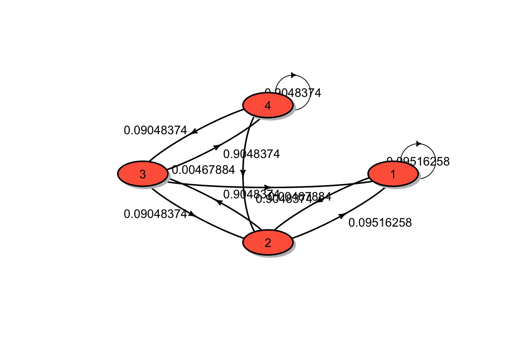

Chapter 6 Tutorials
6.1 Tutorial 1
Consider a random walk, \(S_n\), with \(S_0 = 0\) and where each step is normally distributed with mean 0 and variance 10.
What is the distribution of \(S_{10}\)?
Calculate \(\Pr(S_{10} < -10)\).
Solution:
We have \(S_{10}\) is a sum of \(S_0\) and the i.i.d random variables \(Z_i\), each distributed normal distribution, \(Z_i \sim N(0,10)\). Moreover, \[\mathrm{E}[S_{10}] = \mathrm{E}[S_0 + \sum_{i=1}^{10} Z_i] = S_0 + \sum_{i=1}^{10} \mathrm{E}[Z_i] = 0\] and \[\mathrm{Var}[S_{10}] = \mathrm{Var}[S_0 + \sum_{i=1}^{10} Z_i] = \sum_{i=1}^{10} \mathrm{Var}[Z_i] = 100\] Therefore, the distribution of \(S_{10}\) is normally distributed, \(S_{10} \sim N(0,100)\).
From the previous result, \[\Pr(S_{10} < -10) = \Pr(Z < -1) = 0.1587.\]
Suppose that the value of a commodity as a random walk, where each day the change in price has mean $0.05 and variance $0.1. Use the central limit theorem to estimate the probability that its value is more than $6 after 100 days if the initial value is $0.50.
Solution: We have \(S_{100}\) is a sum of \(S_0\) and the i.i.d random variables \(Z_i\) (each not need to be normal distribution), i.e. \[ S_{100} = S_0 + \sum_{i=1}^{100} Z_i. \] Moreover, \[\mathrm{E}[S_{100}] = \mathrm{E}[S_0 + \sum_{i=1}^{100} Z_i] = S_0 + \sum_{i=1}^{100} \mathrm{E}[Z_i] = 5.5\] and \[\mathrm{Var}[S_{100}] = \mathrm{Var}[S_0 + \sum_{i=1}^{100} Z_i] = \sum_{i=1}^{100} \mathrm{Var}[Z_i] = 10\]
The Central Limit Theorem implies that \(S_{100}\) is approximately normally distributed, \(S_{100} \sim N(5.5,10)\).
\[\Pr(S_{100} > 6) = \Pr(Z > 0.1581) = 1 - \Pr(Z < 0.1581) = 1- 0.5628 = 0.4372.\]
For the random walk process as described in the lecture note,
Calculate \(\Pr(X_8 = 96 | X_0 = 100),\)
Calculate \(\Pr(X_1 = 99, X_8 = 96 | X_0 = 100),\)
Calculate \(\Pr(X_1 = 99, X_4 = 98, X_8 = 96 | X_0 = 100),\)
Calculate \(\Pr( X_4 = 98, X_8 = 96 |X_1 = 99, X_0 = 100),\)
Given \(X_0 = 100\), calculate \(\mathrm{E}[X_5]\).
Write down the joint distribution of \(X_1\) and \(X_3\) given \(X_0 = 100\). (Hint: consider all possible sample paths)
Solution:
Here the price must increase on any 2 day(s) and decrease on any 6 day(s), not necessarily in that order. There are \({ 8 \choose 2} = 28\) different possibilities and each of these has probability \(p^{2}(1-p)^{6}\). Therefore, the required probability is \[\Pr(X_8 = 96 | X_0 = 100) = 28 p^{2}(1-p)^{6} .\]
The problem can be divided into two periods:
The first period of 1 day(s): the price in this period must increase on any 0 day(s) and decrease on any 1 day(s), not necessarily in that order. There are \({ 1 \choose 0}\) different possibilities and each of these has probability \(p^{0}(1-p)^{1}\).
The next period of 7 day(s): the price in this period must increase on any 2 day(s) and decrease on any 5 day(s), not necessarily in that order. There are \({ 7 \choose 2}\) different possibilities and each of these has probability \(p^{2}(1-p)^{5}\).
The required probability is \[\Pr(X_1 = 99, X_8 = 96 | X_0 = 100) = 21 p^{2}(1-p)^{6} .\]
Similar to the previous problem, the required probability can be calculated as follows:
The problem can be divided into three periods:
The first period of 1 day(s): the price in this period must increase on any 0 day(s) and decrease on any 1 day(s), not necessarily in that order. There are \({ 1 \choose 0}\) different possibilities and each of these has probability \(p^{0}(1-p)^{1}\).
The next period of 3 day(s): the price in this period must increase on any 1 day(s) and decrease on any 2 day(s), not necessarily in that order. There are \({ 3 \choose 1}\) different possibilities and each of these has probability \(p^{1}(1-p)^{2}\).
The last period of 4 day(s): the price in this period must increase on any 1 day(s) and decrease on any 3 day(s), not necessarily in that order. There are \({ 4 \choose 1}\) different possibilities and each of these has probability \(p^{1}(1-p)^{3}\).
The required probability is \[\Pr(X_1 = 99, X_4 = 98, X_8 = 96 | X_0 = 100) = 12 p^{2}(1-p)^{6} .\]
By Markov property, we have \[\Pr( X_4 = 98, X_8 = 96 |X_1 = 99, X_0 = 100), = \Pr( X_4 = 98, X_8 = 96 |X_1 = 99).\] Again, the problem can be divided into two periods:
The first period of 3 day(s): the price in this period must increase on any 1 day(s) and decrease on any 2 day(s), not necessarily in that order. There are \({ 3 \choose 1}\) different possibilities and each of these has probability \(p^{1}(1-p)^{2}\).
The next period of 4 day(s): the price in this period must increase on any 1 day(s) and decrease on any 3 day(s), not necessarily in that order. There are \({ 4 \choose 1}\) different possibilities and each of these has probability \(p^{1}(1-p)^{3}\).
The required probability is \[\Pr( X_4 = 98, X_8 = 96 |X_1 = 99, X_0 = 100) = \Pr( X_4 = 98, X_8 = 96 |X_1 = 99) = 12 p^{2}(1-p)^{5} .\]
The variable \(X_5\) can take the values from \(95, 97, 99, 101, 103, 105\). In particular,
\[\begin{aligned} \Pr(X_5 &= 95) = {5 \choose 0} p^0 (1-p)^5 = 1 p^0 (1-p)^5 \\ \Pr(X_5 &= 97) = {5 \choose 1} p^1 (1-p)^4 = 5 p^1 (1-p)^4\\ \Pr(X_5 &= 99) = {5 \choose 2} p^2 (1-p)^3 = 10 p^2 (1-p)^3\\ &\vdots \\ \Pr(X_5 &= 105) = {5 \choose 5} p^5 (1-p)^0 = 1 p^5 (1-p)^0 \end{aligned}\]
Therefore, $\mathrm{E}[X_5] =
95 \cdot \left( 1
p^0 (1-p)^5 \right)
+ 97 \cdot \left(5
p^1 (1-p)^4 \right)
+ 99 \cdot \left(10
p^2 (1-p)^3 \right)
+ \cdots
+ 105 \cdot \left( 1
p^5 (1-p)^0 \right) = 95 + 10*x.$
Alternatively,
\[\begin{aligned} E\left[X_{5}\right] &=E\left[100+\sum_{i=1}^{5} Z_{i}\right] \\ &= 100+5 \cdot E\left[Z_{i}\right] \\ &=100+ 5 (2 p-1) \\ &=95 + 10p\end{aligned}\] where \(E\left[Z_{i}\right] = p-q = p - (1 - p) = 2p -1.\)
For each event,
Identify a stochastic process \(\{ X_t : t \in T\}\) and describe \(X_t\) in context.
Describe the time domain and state space. State whether the time domain and state space are discrete or continuous.
Sociologists categorise the population of a country into upper-, middle- and lower-class groups. One of the government offices has monitored the movement of successive generations among these three groups.
The insurer’s surplus (an excess of income or assets over expenditure or liabilities in a given period) at any future time which is defined as the initial surplus plus the premium income up to time \(t\) minus the aggregate claims up to time \(t\).
In a working day, a coffee shop owner records customer arrival times.
The gambler starts with m and bets per game. The probability of winning is \(p\) and the probability of losing is \(q\) where \(p + q = 1\). In addition, the gambler is ruined (or goes broke) if he reaches state 0, and also stops the game if he reaches state \(N\).
In the board game Monopoly, there are 40 squares. A player is interested to know the successive board position.
Solution:
Let \(X_{n}\) be the class of \(n^{\text {th }}\) generation of a family. The state space, \(S=\{\text {Upper, Middle, Lower} \}\), is discrete. The index set, \(I=\{0,1,2, \ldots\}\), is also discrete.
Let \(S(t)\) be the insurer’s surplus at time \(t\). \(S=\mathbb{R} \text { and } I=[0, \infty)\).
Let \(X_{n}\) be the amount of money of the gambler after game \(n\).
\(S=\{0,1,2 \ldots, N\} \text { and } I=\{0,1,2 ,\ldots \}\).
Suppose that the opening hours of the coffee shop are from 7:00 am to 6:00 pm (i.e. 11 hours). Let \(X_{n}\) be the arrival time of customer \(n\). State space (continuous)
\(S=[0,11 \times 60]=[0,660]\) (in minutes) and \(I=\{1,2, \ldots\}\).
Let \(x_{n}\) be a player’s board position after \(n\) plays.
\(S=\{1,2,3, \ldots, 40\}\) and \(I=\{0,1,2, \ldots \}.\)
The simple weather pattern can be classified into three types including rainy (\(R\)), cloudy (\(C\)) and sunny (\(S\)). The weather is observed daily. The following information is provided.
On any given rainy day, the probability that it will rain the next day is 0.7; the probability that it will be cloudy the next day 0.2.
On any given cloudy day, the probability that it will rain the next day is 0.75; the probability that it will be sunny the next day 0.1.
On any given sunny day, the probability that it will rain the next day is 0.2; the probability that it will be sunny the next day 0.4.
Explain how this may be modelled by a Markov chain.
Solution: The three weather conditions describe the three state of the Markov chain. Let \(X_{n}\)be the weather condition on day \(n\).
State 1 (R) rainy day
State 2 (C) cloudy day
State 3 (S) sunny day
The transition probability matrix \(P\) for this Markov chain is
\[P=\left[\begin{array}{lll} 0.7 & 0.2 & 0.1 \\ 0.75 & 0.15 & 0.1 \\ 0.2 & 0.4 & 0.4 \end{array}\right]\]
This stochastic process has the Morkov property because the weather condition on the next day depends only on the condition today.
Explain whether an independent and identically distributed sequence of random variables has a Markov property.
Solution: Assume that this Markov chain \(X_0, X_1, X_2 \ldots,\) takes values in \(\{1,2, \ldots, k\} \text { with }\)
\[P\left(X_{n}=j\right) = p_{j} \quad \text { for } j=1,2, \ldots, k \quad \text { and } n \geq 0 .\] Note that this equality holds for all \(n\) because \(\left\{X_{n} \right\}_{n \ge 0}\) have the same distribution.
By independence,
\[P\left(x_{n}=j \mid x_{n-1}=i\right)=P\left(x_{n}=j\right)=p_{j},\]
This proves our claim that the i.i.d. sequence of random variables has a Markov property. Note also that the transition matrix is \[P = \begin{bmatrix} p_1 & p_2 & \cdots & p_k \\ p_1 & p_2 & \cdots & p_k \\ \vdots & \vdots & & \vdots \\ p_1 & p_2 & \cdots & p_k \\ \end{bmatrix}.\]
The random variables \(Z_1, Z_2, \ldots\) are independent and with the common probability mass function \[Z_i = \begin{cases} 1, & \text{ with probability } 0.2 \\ 2, & \text{ with probability } 0.3 \\ 3, & \text{ with probability } 0.4 \\ 4, & \text{ with probability } 0.1 \\ \end{cases}\] Let \(X_0 = 1\) and \(X_n = \max\{Z_1, Z_2, \ldots, Z_n \}\) be the largest \(Z\) observed to date. Explain how this may be modelled by a Markov chain. Solution:
Given \(X_{0}=1\) and \(X_{n}=\max \left\{Z_{1}, Z_{2}, \ldots, Z_{n}\right\}\) where \(\left\{Z_{i}\right\}\) are i.i.d. random variables with
\(i\) 1 2 3 4 \(P(Z_i = i)\) 0.2 0.3 0.4 0.1 We note that
\[\begin{aligned} X_{n+1} &=\operatorname{max}\left\{Z_{1}, Z_{2}, \ldots, Z_{n+1}\right\} \\ &=\operatorname{max}\left\{X_{n}, Z_{n+1}\right\} \end{aligned}\] Consider the transition probabilities
$$\begin{aligned}
P\left(X_{n+1} = j \mid X_{n}=i \right) &= P\left(\max \left\{X_{n}, Z_{n+1}\right\}=j \mid X_{n}=i\right) \\
&=P\left(\max \left\{i, Z_{n+1}\right\}=j \mid X_{n}=i\right)
\end{aligned}$$
**Case 1:** If $i=1$, then $$\max \left\{1, Z_{n+1}\right\}=
\begin{cases}
1 & \text{w.p. } 0.2 \\
2 & \text{w.p. } 0.3 \\
3 & \text{w.p. } 0.4 \\
4 & \text{w.p. } 0.1 \\
\end{cases}$$
**Case 2:** If $i=2$, then $$\max \left\{2, Z_{n+1}\right\}=
\begin{cases}
1 & \text{w.p. } 0 \\
2 & \text{w.p. } 0.5 \quad (\text{i.e. } z_{n+1} = 1 \text{ or } 2 )\\
3 & \text{w.p. } 0.4 \\
4 & \text{w.p. } 0.1 \\
\end{cases}$$
**Case 3:** If $i=3$, then $$\max \left\{3, Z_{n+1}\right\}=
\begin{cases}
1 & \text{w.p. } 0 \\
2 & \text{w.p. } 0 \\
3 & \text{w.p. } 0.9 \\
4 & \text{w.p. } 0.1 \\
\end{cases}$$
**Case 4:** If $i=4$, then $$\max \left\{4, Z_{n+1}\right\}=
\begin{cases}
1 & \text{w.p. } 0 \\
2 & \text{w.p. } 0 \\
3 & \text{w.p. } 0 \\
4 & \text{w.p. } 1 \\
\end{cases}$$ The transition probability matrix is then
$$P =
\begin{bmatrix}
0.2 & 0.3 & 0.4 & 0.1 \\
0 & 0.5 & 0.4 & 0.1 \\
0 & 0 & 0.9 & 0.1 \\
0 & 0 & 0 & 0.1 \\
\end{bmatrix}.$$ Clearly the sequence $X_0, X_1, X_2,\ldots$ can be
modelled by the Markov chain with the transition probability matrix
$P$. Moreover, given the most recent value $X_n$, its future value
$X_{n+1}$ is independent of the past history
$X_0, X_1, \ldots, X_{n-1}$.6.2 Tutorial 2
A Markov chain \(X_0, X_1, \ldots\) on states \(1, 2, 3\) has the following transition matrix \[P = \begin{bmatrix} 0.5 & 0.3 & 0.2 \\ 0.2 & 0.2 & 0.6 \\ 0.3 & 0.2 & 0.5 \\ \end{bmatrix}.\] The distribution of the initial random variable \(X_0\) is \(\boldsymbol{\mu} = (0.3, 0.3, 0.4)\).
Draw a transition diagram for the chain.
Determine \(\Pr(X_0 = 1, X_1 = 2, X_2 = 3).\)
Determine \(\Pr(X_1 = 2, X_2 = 3 | X_0 = 1).\)
Determine \(\Pr(X_{11} = 2, X_{12} = 3 | X_{10} = 1).\)
Determine \(\Pr(X_2 = 3 | X_0 = 1).\)
Determine \(\Pr(X_3 = 3 | X_1 = 1).\)
Determine \(\Pr(X_2 = 3).\)
Determine \(\mathrm{E}[X_2]\)
Solutions:
The transition diagram for the chain is shown in the figure below:
\(\Pr(X_0 = 1, X_1 = 2, X_2 = 3) = \mu_1 p_{12} p_{23} = (0.3)(0.3)(0.6) = 0.054.\)
\(\Pr(X_1 = 2, X_2 = 3 | X_0 = 1) = p_{12} p_{23} = (0.3)(0.6) = 0.18.\)
From the time homogeneous assumption, it follows that \[\Pr(X_{11} = 2, X_{12} = 3 | X_{10} = 1) = \Pr(X_1 = 2, X_2 = 3 | X_0 = 1) = 0.18.\]
\(\Pr(X_2 = 3 | X_0 = 1) = (P^2)_{13} = 0.38.\)
\(\Pr(X_3 = 3 | X_1 = 1) = \Pr(X_2 = 3 | X_0 = 1) = (P^2)_{13} = 0.38.\)
\(\Pr(X_2 = 3) = (\boldsymbol{\mu}P^2)_3 = 0.424.\)
\(\mathrm{E}[X_2] = \sum_{k=1}^3 k \Pr(X_2 = k) = (1, 2, 3) \cdot (0.343, 0.233, 0.424) = 2.081.\)
Note that
## P^2
## A 3 - dimensional discrete Markov Chain defined by the following states:
## 1, 2, 3
## The transition matrix (by rows) is defined as follows:
## 1 2 3
## 1 0.37 0.25 0.38
## 2 0.32 0.22 0.46
## 3 0.34 0.23 0.43A Markov chain \(X_0, X_1, \ldots\) on states 1,2,3 has the following transition matrix \[P = \begin{bmatrix} 0 & 1/2 & 1/2 \\ 1/3 & 1/3 & 1/3 \\ 1/2 & 1/2 & 0 \\ %\vdots & \vdots & \vdots & \vdots \\ %p_{d1} & p_{d2} & p_{d3} & \dots & p_{dn} \end{bmatrix}.\] The process starts in states \(X_0 = 1\).
Draw a transition diagram for the chain.
Determine \(\Pr(X_0 = 1, X_1 = 3, X_2 = 2).\)
Determine \(\Pr(X_1 = 3, X_2 = 2 | X_0 = 1).\)
Determine \(\Pr(X_2 = 2 | X_0 = 1).\)
Determine \(\Pr(X_3 = 2 | X_1 = 1).\)
Determine \(\Pr(X_2 = 2).\)
Solution:
The transition diagram for the chain is shown in the figure below:
\(\Pr(X_0 = 1, X_1 = 3, X_2 = 2) = \mu_1 p_{13} p_{32} = (1)(1/2)(1/2) = 1/4.\)
\(\Pr(X_1 = 3, X_2 = 2 | X_0 = 1) = p_{13} p_{32} = (1/2)(1/2) = 1/4.\)
\(\Pr(X_2 = 2 | X_0 = 1) = (P^2)_{12} = 5/12.\)
\(\Pr(X_3 = 2 | X_1 = 1) = \Pr(X_2 = 2 | X_0 = 1) = (P^2)_{12} = 5/12.\)
\(\Pr(X_2 = 2) = (\boldsymbol{\mu}P^2)_2 = 5/12.\)
Note that
## P^2
## A 3 - dimensional discrete Markov Chain defined by the following states:
## 1, 2, 3
## The transition matrix (by rows) is defined as follows:
## 1 2 3
## 1 0.4166667 0.4166667 0.1666667
## 2 0.2777778 0.4444444 0.2777778
## 3 0.1666667 0.4166667 0.4166667A Markov chain \(X_0, X_1, \ldots\) on sates 1,2 has the following transition matrix \[P = \begin{bmatrix} 1-a & a \\ b & 1-b \\ %\vdots & \vdots & \vdots & \vdots \\ %p_{d1} & p_{d2} & p_{d3} & \dots & p_{dn} \end{bmatrix},\] where \(0 < a,b < 1.\)
Draw a transition diagram for the chain.
the distribution of \(X_1\).
Show that \[P^n = \frac{1}{a+b} \begin{bmatrix} b & a \\ b & a \\ %\vdots & \vdots & \vdots & \vdots \\ %p_{d1} & p_{d2} & p_{d3} & \dots & p_{dn} \end{bmatrix} + \frac{(1-a-b)^n}{a+b} \begin{bmatrix} a & -a \\ -b & b \\ \end{bmatrix}.\]
Given that \(X_0 = 1\), what is the probability that in the long run the system will be in state 1? (Hint: consider \(\lim_{n \rightarrow \infty} \boldsymbol{\mu} P^n\))
Given that \(X_0 = 1\), what is the probability that in the long run the system will be in state 2?
Given that \(X_0 = 2\), what is the probability that in the long run the system will be in state 1?
Given that \(X_0 = 2\), what is the probability that in the long run the system will be in state 2?
Solution:
Leave it to the reader.
Denote \(\boldsymbol{\mu} = (\mu_1, \mu_2)\) the initial probability distribution. Then the distribution of \(X_1\) is \(\boldsymbol{\mu}^{(1)} = \boldsymbol{\mu} P = (\mu_1(1-a) + \mu_2 b, \mu_1 a + \mu_2(1-b))\)
We apply eigendecomposition of a matrix. For more details, please follow this link from Wikipedia link.
The eigenvalues of \(P\) are \(\lambda_1 = 1\) and \(\lambda_2 = 1 - a -b\) and the corresponding eigenvectors are
\[v_1 = \begin{bmatrix}
1 \\
1 \\
\end{bmatrix}, \quad
v_2 = \begin{bmatrix}
-a/b \\
1 \\
\end{bmatrix}.
\]
Then the transition matrix can be factorised as
\[P = \begin{bmatrix}
1 & -a/b \\
1 & 1 \\
\end{bmatrix}
\begin{bmatrix}
1 & 0 \\
0 & 1 - a - b \\
\end{bmatrix}
\begin{bmatrix}
1 & -a/b \\
1 & 1 \\
\end{bmatrix}^{-1}.
\]
Hence
\[\begin{aligned} P^n &= \left( \begin{bmatrix} 1 & -a/b \\ 1 & 1 \\ \end{bmatrix} \begin{bmatrix} 1 & 0 \\ 0 & (1 - a - b)^n \\ \end{bmatrix} \right) \begin{bmatrix} 1 & -a/b \\ 1 & 1 \\ \end{bmatrix}^{-1} \\ &= \begin{bmatrix} 1 & -\frac{a}{b}(1 - a - b)^n \\ 1 & (1 - a - b)^n \\ \end{bmatrix} \left( \frac{1}{1 + a/b} \begin{bmatrix} 1 & a/b \\ -1 & 1 \\ \end{bmatrix} \right) \\ &= \frac{1}{a+b} \begin{bmatrix} b + a(1 - a - b)^n & a - a(1 - a - b)^n \\ b - b(1 - a - b)^n & a + b(1 - a - b)^n \end{bmatrix} \\ &= \frac{1}{a+b} \begin{bmatrix} b & a \\ b & a \end{bmatrix} + \frac{(1 - a - b)^n}{a+b} \begin{bmatrix} a & -a \\ -b & b \end{bmatrix} \end{aligned}. \] Note that \[\lim_{n \rightarrow \infty} P^n = \frac{1}{a+b} \begin{bmatrix} b & a \\ b & a \end{bmatrix}, \] which follows from the facts that \(-1 < 1 -a -b < 1\) and \((1- a-b)^n \rightarrow 0\) as \(n \rightarrow \infty\).
It follows from the above results that in the long run \[ \lim_{n \rightarrow \infty} \Pr(X_n = 1| X_0 = 1) = (\lim_{n \rightarrow \infty} P^n)_{11} = \frac{b}{a+b}. \]
In the long run, we have \[ \lim_{n \rightarrow \infty} \Pr(X_n = 2| X_0 = 1) = (\lim_{n \rightarrow \infty} P^n)_{12} = \frac{a}{a+b}. \]
In the long run, we have \[ \lim_{n \rightarrow \infty} \Pr(X_n = 1| X_0 = 2) = (\lim_{n \rightarrow \infty} P^n)_{21} = \frac{b}{a+b}. \]
In the long run, we have \[ \lim_{n \rightarrow \infty} \Pr(X_n = 2| X_0 = 2) = (\lim_{n \rightarrow \infty} P^n)_{22} = \frac{a}{a+b}. \]
Furthermore, for any initial distribution \(\boldsymbol{\mu}\), the limiting distribution with this initial distribution is \[ \lim_{n \rightarrow \infty} \boldsymbol{\mu} P^n = (\frac{b}{a+b}, \frac{a}{a+b}).\] This gives the long term proportion of the Markov chain, i.e. the probability of finding the process in state 1 is \(\frac{b}{a+b}\) and in state 2 is \(\frac{a}{a+b}\), irrespective of the stating state.
Let \(a\) be a constant and \(\xi_1, \xi_2, \ldots\) be a sequence of independent and identically distributed (i.i.d.) random variables. The stochastic process \(\{ X_n\}\) is defined by \[X_0 = a, \quad X_n = X_{n-1} + \xi_n, \, n > 1.\] This process is known as a random walk.
Express the state \(X_n\) in terms of \(X_0\) and the random variables \(\xi_i, i = 1,2 \ldots\).
Find \(\mathrm{E}[X_n]\) and \(\mathrm{Var}[X_n]\).
Does the process have the Markov property? Explain.
Is the process stationary? Explain.
Solution:
From the definition, it follows that \[ \begin{aligned} X_0 &= a \\ X_1 &= X_0 + \xi_1 = a + \xi_1 \\ X_2 &= X_1 + \xi_2 = a + \xi_1 + \xi_2 \\ &\vdots \\ X_n &= X_{n-1} + \xi_n = a + \sum_{i=1}^n \xi_i, \quad n \ge 1. \end{aligned} \]
Let \(\mu = \mathrm{E}[\xi_i]\) and \(\sigma^2 = \mathrm{Var}[\xi_i]\) denote the mean and variance of the increments \(\xi_i\). Then \[ \begin{aligned} \mathrm{E}[X_n] &= \mathrm{E}\left[a + \sum_{i=1}^n \xi_i\right] = a+ \sum_{i=1}^n \mathrm{E}[\xi_i] = a + n \mu, \\ \mathrm{Var}[X_n] &= \mathrm{Var}\left[a + \sum_{i=1}^n \xi_i\right] = \sum_{i=1}^n \mathrm{Var}[\xi_i] = n \sigma^2. \end{aligned} \] The last equality follows from the assumption that \(\xi_1, \xi_2, \ldots\) are independent.
The process \(\{X_n\}_{n\ge0}\) has independent increments and , hence, has the Markov property. More details can be found from the lecture note link.
The process is not stationary because \(\mathrm{E}[X_n]\) is not constant and \(\mathrm{Var}[X_n]\) also depends on \(n\).
Consider a homogeneous discrete-time Markov chain that describes the daily weather pattern. The weather patterns are classified into 3 conditions: R(rainy), C (cloudy) and S(sunny). Based on the daily observations, the following information are given:
On any rainy day, the probability that it will rain the next day is 0.7; the probability that tomorrow will be cloudy is 0.2 and the probability that tomorrow will be sunny is 0.1.
On any cloudy day, the probability that it will rain the next day is 0.5; the probability that tomorrow will be cloudy is 0.35 and the probability that tomorrow will be sunny is 0.15.
On any sunny day, the probability that it will rain the next day is 0.1; the probability that tomorrow will be cloudy is 0.4 and the probability that tomorrow will be sunny is 0.5.
Draw a transition diagram for the chain and write down a transition matrix.
Find the probability that tomorrow is cloudy and the day after is rainy, given that it is sunny today.
Given that today is rainy, find the probability that it will be sunny in two days time.
Solution:
- The transition matrix \(P\) and the transition diagram are given in the results below :
## P
## A 3 - dimensional discrete Markov Chain defined by the following states:
## R, C, S
## The transition matrix (by rows) is defined as follows:
## R C S
## R 0.7 0.20 0.10
## C 0.5 0.35 0.15
## S 0.1 0.40 0.50
The probability that tomorrow is cloudy and the day after is rainy, given that it is sunny today is \[ \Pr(X_1 = C, X_2 = R | X_0 = S) = (0.4)(0.5) = 0.2.\]
Given that today is rainy, the probability that it will be sunny in two days time is \[ \Pr(X_2 = S | X_0 = R) = (P^2)_{13} = 0.15.\]
6.3 Tutorial 3
A Markov chain \(X_0, X_1, \ldots\) on states 1, 2, 3 with initial distribution \(\boldsymbol{\mu} = (1/4,1/4,1/2)\). It has the following transition matrix \[P = \begin{bmatrix} 1/2 & 1/4 & 1/4 \\ 1/3 & 1/3 & 1/3 \\ 1/5 & 2/5 & 2/5 \\ %\vdots & \vdots & \vdots & \vdots \\ %p_{d1} & p_{d2} & p_{d3} & \dots & p_{dn} \end{bmatrix}.\] Compute the following probabilities:
\(\Pr(X_{11} = 1, X_{12} = 2, X_{13} = 3 | X_{10} = 1).\)
\(\Pr(X_0 = 3, X_1 = 2 , X_2 = 1).\)
\(\Pr(X_1 = 3, X_2 = 2 , X_3 = 1).\)
\(\Pr(X_{1} = 2, X_{3} = 2, X_{5} = 2).\)
Solution:
1. We have \(\Pr(X_{11} = 1, X_{12} = 2, X_{13} = 3 | X_{10} = 1) = p_{11} p_{12} p_{23} = (1/2)(1/4)(1/3) = 1/24.\)
2. We have \(\Pr(X_0 = 3, X_1 = 2, X_2 = 1) = \mu_3 p_{32} p_{21} = (0.5)(2/5)(1/3) = 1/15.\)
3. We have \[\begin{aligned} \Pr(X_1 = 3, X_2 = 2, X_3 = 1) &= \sum_{i=1}^{3} \Pr(X_0 = i) \Pr(X_1 = 3, X_2 = 2, X_3 = 1 | X_0 = i) \\ &= \sum_{i=1}^{3} \mu_i p_{i3} p_{32} p_{21} \\ &= \left( \sum_{i=1}^{3} \mu_i p_{i3} \right) p_{32} p_{21} \\ &= (\boldsymbol{\mu}P)_3 p_{32} p_{21}\\ &= (83/240)(2/5)(1/3) \\ &= 83/1800 = 0.0461111. \end{aligned}\]
4. We have \[\begin{aligned} \Pr(X_1 = 2, X_3 = 2, X_5 = 2) &= \sum_{i=1}^{3} \Pr(X_0 = i) \Pr(X_1 = 2, X_3 = 2, X_5 = 2 | X_0 = i) \\ &= \sum_{i=1}^{3} \mu_i p_{i2} p^{(2)}_{22} p^{(2)}_{22} \\ &= \left( \sum_{i=1}^{3} \mu_i p_{i2} \right) p^{(2)}_{22} p^{(2)}_{22} \\ &= (\boldsymbol{\mu}P)_2 p^{(2)}_{22} p^{(2)}_{22}\\ &= (83/240)(59/180)(59/180) \\ &= 9356/251805 = 0.0371557. \end{aligned}\]
A Markov chain with state space \(S = \{1,2,3,4,5,6\}\) has the following transition matrix: \[P = \begin{bmatrix} 1/4 & 0 & 3/4 & 0 & 0 & 0 \\ 0 & 0 & 0 & 1 & 0 & 0 \\ 0 & 0 & 1/2 & 0 & 0 & 1/2 \\ 1/5 & 1/5 & 1/5 & 0 & 1/5 & 1/5 \\ 0 & 0 & 0 & 0 & 1 & 0 \\ 1/3 & 0 & 0 & 0 & 0 & 2/3 \\ \end{bmatrix}.\]
Draw a transition diagram.
Identify the communication classes and classify them as closed or non-closed.
Is the Markov chain irreducible?
Solution:
1. The transition diagram is shown in the figure below:
2. There are two closed classes \(C^1 = \{1, 3, 6\}\) and \(C^2 = \{5\}\) because
\(p_{55} = 1\) and
\(1 \rightarrow 3 \rightarrow 6 \rightarrow 1\), and hence \(1, 3, 6\) are in the same communication class. In addition, for each \(i \in C^1\), \(\sum_{j \in C^1} p_{ij} = 1\), which implies that escaping from \(C^1\) is impossible. Therefore \(C^1\) is a closed class.
There is one non-closed class \(O = \{2, 4\}\). This is because \(2 \leftrightarrow 4\) and \(p_{43} >0\).
- The Markov chain is reducible because it contains more than one communication classes.
For each of the Markov chains whose transition matrix is given below, identify the closed classes and the vector of absorption probabilities associated with each of these closed classes. Assume that the states are labelled \(1,2,3 \ldots\).
\[\begin{bmatrix} 1/6 & 0 & 1/3 & 1/2 \\ 0 & 1/3 & 2/3 & 0 \\ 1/2 & 1/2 & 0 & 0 \\ 0 & 0 & 1/4 & 3/4 \\ \end{bmatrix}.\]
\[\begin{bmatrix} 0 & 1/4 & 3/4 & 0 \\ 0 & 1/3 & 0 & 2/3 \\ 1/3 & 0 & 1/3 & 1/3 \\ 0 & 0 & 0 & 1 \\ \end{bmatrix}.\]
\[\begin{bmatrix} 1/4 & 1/4 & 1/4 & 1/4 \\ 0 & 3/4 & 1/4 & 0 \\ 0 & 3/4 & 1/4 & 0 \\ 0 & 0 & 0 & 1 \\ \end{bmatrix}.\]
\[\begin{bmatrix} 0 & 0 & 0 & 1/2 & 0 & 0 & 1/2 \\ 1/6 & 0 & 1/6 & 0 & 0 & 1/6 & 1/2 \\ 0 & 0 & 1 & 0 & 0 & 0 & 0 \\ 1/2 & 0 & 0 & 1/2 & 0 & 0 & 0 \\ 1/4 & 1/4 & 0 & 0 & 0 & 0 & 1/2 \\ 0 & 1 & 0 & 0 & 0 & 0 & 0 \\ 1/2 & 0 & 0 & 0 & 0 & 0 & 1/2 \\ \end{bmatrix}.\]
Solution:
1. Every two states communicate, so \(\{1, 2, 3, 4 \}\) is a single closed class (since \(1 \rightarrow 4 \rightarrow 3 \rightarrow 2 \rightarrow 3 \rightarrow 1\)). The absorption probabilities are 1, since each state is in this closed class. The transition diagram is shown in the figure below:

2. There are two non-closed classes \(O^1 = \{1, 3\}\) and \(O^2 = \{2\}\) and a closed class \(C^1 = \{4\}\). Since we have a single closed class, all absorption probabilities to this closed class \(C^1 = \{4\}\) are equal to 1. The transition diagram is shown in the figure below:
3. There are two closed classes \(C^1 = \{2, 3\}\) and \(C^2 = \{4\}\) and a non-closed class \(O^1 = \{1\}\). The transition diagram is shown in the figure below:
Let \(\mathbf{u}=\mathbf{u}^{C_{2}}\) be the vector of absorption probabilities in the closed class \(C^2 = \{4\}\). Write \(\mathbf{u}= (u_1,u_2,u_3,u_4)^T\) and \(u_4 = 1\) and \(u_2 = u_3 =0\),
From \(\mathbf{u}=P \cdot \mathbf{u}\),
\[\left(\begin{array}{c}u_{1} \\ u_{2} \\ u_{3} \\ u_{4}\end{array}\right)=\begin{bmatrix} 1/4 & 1/4 & 1/4 & 1/4 \\ 0 & 3/4 & 1/4 & 0 \\ 0 & 3/4 & 1/4 & 0 \\ 0 & 0 & 0 & 1 \\ \end{bmatrix} \left(\begin{array}{c}u_{1} \\ u_{2} \\ u_{3} \\ u_{4}\end{array}\right) \text { gives}\] \[ u_1 = \frac{1}{4} u_1 + \frac{1}{4}\] Solving the linear system for \(u_1\) yields \(u_1 = 1/3\). Hence, the absorption probabilities in the closed class \(C_2\) is \[\mathbf{u}= (1/3,0,0,1)^T.\] In addition, since there are two closed classes, \(\mathbf{u}^{C_1} = \mathbf{1} - \mathbf{u}^{C_2} = (2/3,1,1,0)^T.\)
4. There are two closed classes \(C^1 = \{1, 4, 7\}\) and \(C^2 = \{3\}\) and two non-closed classes \(O^1 = \{2, 6\}\) and \(O^2 = \{5\}\). The transition diagram is shown in the figure below:
Let \(\mathbf{u}=\mathbf{u}^{C_{2}}\) be the vector of absorption probabilities in the closed class \(C^2 = \{3\}\). Write \(\mathbf{u}= (u_1,u_2,u_3,\ldots, u_7)^T\) and \(u_3 = 1\) and \(u_1 = u_4 = u_7 =0\),
\[\left(\begin{array}{c}u_{1} \\ u_{2} \\ \vdots \\ u_{7}\end{array}\right)=P\left(\begin{array}{c}u_{1} \\ u_{2} \\ \vdots \\ u_{7}\end{array}\right) \text{ gives}\] \[\begin{aligned} u_2 &= \frac{1}{6} + \frac{1}{6} u_6 \\ u_5 &= \frac{1}{4} u_2\\ u_6 &= u_2.\\ \end{aligned}\] Solving the linear system for \(u_2, u_5\) and \(u_6\) yields \(u_2 = 1/5, u_5 = 1/20\) and \(u_6 = 1/5\). Hence, the absorption probabilities in the closed class \(C_2\) is \[\mathbf{u}= (0,1/5,1,0,1/20,1/5,0)^T.\] In addition, since there are two closed classes, \(\mathbf{u}^{C_1} = \mathbf{1} - \mathbf{u}^{C_2} = (1,4/5,0,1,19/20,4/5,1)^T.\)
- If the Markov chain defined in Question 3 is irreducible, i.e. it has a unique stationary distribution, then find the stationary distribution of the chain.
Solution:
The only irreducible Markov chain is 3.1.
Denote the stationary probability distribution by \(\boldsymbol{\pi} = (\pi_1, \pi_2, \pi_3, \pi_4)\).
To find the stationary distribution, we simply solve the linear equations \(\boldsymbol{\pi} P =\boldsymbol{\pi}\) (note that one of the equations can be discarded), together with the condition \(\sum_{j \in S} \pi_j = 1\).
By discarding the third quation, we obtain
\(\pi_1 + \pi_2 + \pi_3 + \pi_4 = 1\), \[(\pi_1, \pi_2, \pi_3, \pi_4) \begin{bmatrix} 1/6 & 0 & 1/3 & 1/2 \\ 0 & 1/3 & 2/3 & 0 \\ 1/2 & 1/2 & 0 & 0 \\ 0 & 0 & 1/4 & 3/4 \\ \end{bmatrix} = (\pi_1, \pi_2, \pi_3, \pi_4),\] which is equivalent to \[\begin{aligned} (1/6)\pi_1 + (1/2)\pi_3 &= \pi_1 \\ (1/3)\pi_2 + (1/2)\pi_3 &= \pi_2 \\ (1/2)\pi_1 + (3/4)\pi_4 &= \pi_4 \\ \pi_1 + \pi_2 + \pi_3 + \pi_4&= 1 \end{aligned}\]
Solving the above system of linear equations, we obtain \(\pi_1, \pi_2, \pi_3\): \[\pi_1 = \frac{12}{71}, \quad \pi_2 = \frac{15}{71}, \quad \pi_3 = \frac{20}{71}, \quad \pi_4 = \frac{24}{71}.\]
Assume that a Markov chain has more than one closed classes (say \(r\) closed classes). The Markov chain can have many stationary distributions. Assume further that within each of these \(r\) closed classes, the associated Markov chain is aperiodic. The followings hold:
Within a closed class \(C_1\), let \(P_1\) be a reduction of a matrix \(P\) which is formed by deleting all rows and columns corresponding to states from other classes. Then there exists a unique stationary distribution, denoted by \(\{\pi_j^{(1)}\}_{j \in C_1}.\)
Similarly, let \(\{\pi_j^{(2)}\}_{j \in C_2}, \ldots, \{\pi_j^{(r)}\}_{j \in C_r}\) be stationary distributions within other classes.
- Show that for any numbers \(\gamma_1, \gamma_2, \ldots, \gamma_r\) such that \(\sum_{m=1}^r \gamma_m = 1\), the following distribution \(\{ \pi_j \}\) is stationary, where
\[\begin{equation} \tag{6.1} \pi_j = \begin{cases} \pi_j^{(k)} \gamma_k & \text{for } j \in C_k, \, k= 1,\ldots, r \\ 0 & \text{if } j \text{ is in a nonclosed class.} \end{cases} \end{equation}\] (In particular, any stationary distribution of the Markov chain is of this form.)
Write down the general form of stationary distributions of the Markov chain in Questions 3.3 and 3.4.
Now we will focus on limiting distributions. Consider the three following possible cases.
If \(X_0 = i\) and \(i \in C_k\) for some closed class \(C_k\), then verify that the limiting distribution is defined as in Eqn.(6.1) where \(\gamma_k =1\) and \(\gamma_m = 0,\) for \(m \neq k\).
If \(X_0 = i\) and \(i\) is in a nonclosed class, then verify that the limiting distribution is defined as in Eqn.(6.1) where \(\gamma_k = \alpha^{(k)}_i\) for \(k = 1,2,\ldots r\) where \(\alpha^{(k)}_i\) is the probability of absorption in class \(C_k\). More precisely, \[\pi_j = \begin{cases} \pi_j^{(k)} \alpha^{(k)}_i & \text{for } j \in C_k, \, k= 1,\ldots, r \\ 0 & \text{if } j \text{ is in a nonclosed class.} \end{cases} %\pi_j^{(k)} \gamma_k \text{ for } j \in C_k, \, k= 1,\ldots, r \text { and }\]
If \(X_0\) is random, then this will leave as extra exercise. (Hint: you may need to apply first step anslysis)
Solution:
- We will illustrate the results of this question by using the Markov chain given in Question 3.3.
We know that \(C_1 = \{2,3\}\) and \(C_2 = \{4\}\) are closed and \(\{1\}\) is non-closed. Both \(\{2,3\}\) and \(\{4\}\) are aperiodic.
The stationary distribution within the class \(C_1\), denoted by \(\boldsymbol{\pi}^{(1)} = (\pi_1, \pi_2 )\) can be obtained from solving \(\pi_1 + \pi_2 = 1\), \[(\pi_1, \pi_2) \begin{bmatrix} 3/4 & 1/4 \\ 3/4 & 1/4 \\ \end{bmatrix} = (\pi_1, \pi_2).\]
Therefore, \(\boldsymbol{\pi}^{(1)} = (3/4, 1/4 )\).
Similarly, the stationary distribution within the class \(C_2 = \{4\}\) is \(\boldsymbol{\pi}^{(2)} = (1)\).
It is now easy to verify that for for any numbers \(\gamma_1 + \gamma_2 = 1\), the following probability distribution is stationary:
\[\boldsymbol{\pi} = (0, (3/4)\gamma_1, (1/4)\gamma_1, \gamma_2).\]
2. In particular, the general form of a stationary distribution is of this form: \[\boldsymbol{\pi} = (0, (3/4)\gamma_1, (1/4)\gamma_1, \gamma_2).\]
It should be emphasised that the above results confirm that the Markov chain have many stationary distributions.
3. Again using the Markov chain given in Question 3.3, we have that If either \(X_0 = 2\) or \(X_0 = 3\) (i.e. the Markov chain initially starts in the closed class \(C_1 = \{2,3\}\)), (with the aid of computer software) the limiting distribution is \[\boldsymbol{\pi} = (0,3/4,1/4,0).\]
If \(X_0 = 4\) (i.e. the Markov chain initially starts in the closed class \(C_2 = \{4\}\)), (with the aid of computer software) the limiting distribution is
\[\boldsymbol{\pi} = (0,0,0,1).\]
- If \(X_0 = 1\) (i.e. the Markov chain initially starts in the closed class \(C_2 = \{4\}\)), (with the aid of computer software) the limiting distribution is
\[\boldsymbol{\pi} = (0, (3/4)\alpha_1^{(1)}, (1/4)\alpha_1^{(1)}, \alpha_1^{(2)}),\] where \(\alpha_1^{(1)} = 2/3\) and \(\alpha_1^{(2)} = 1/3\) is the probability of absorption in classes \(C_1\) and \(C_2\), respectivel.
Hence, \[\boldsymbol{\pi} = (0, 1/2, 1/6, 1/3).\]
- If \(X_0\) is random, one approach is to use the first step analysis to calculate the limiting distribution. This will leave as extra exercise.
A no-claims discount system for motor insurance has four levels of discount:
Level 1 2 3 4 Discount 0% 10% 30% 50% The rules for moving between these levels are given as follows:
Following a claim-free year, move to the next higher level, or remain at level 4.
Following a year with one claim, move to the next lower level, or remain at level 1.
Following a year with two or more claims, move down two levels, or move to level 1 (from level 2), or remain at level 1.
A portfolio consists of 10,000 policyholders. Suppose also that the number of claims per year is \(\mathcal{Poisson}(0.1)\). Suppose at time 0 all policyholders are at level 1.
Calculate \(\Pr[N = 0]\), \(\Pr[N = 1]\), and \(\Pr[N \ge 2]\) for each group.
Write down the transition probability matrix of this no-claims discount system.
Find the probability that a policyholder who has the 30% discount has no discount after 2 years.
Calculate the expected number of policyholders at each level at times 1 and 2, assuming no exits.
Calculate the expected number of policyholders at each level once stability has been achieved, assuming no exits.
Solution: 1. For a given policyholder, the number of claims each year, \(N\), has a Poisson distribution with parameter \(\lambda=0.1\). Therefore,
\(p_0 = \Pr(N = 0) = e^{-0.1} = 0.9048374\)
\(p_1 = \Pr(N = 1) = e^{-0.1}(0.1) = 0.0904837\)
\(p_{2+} = \Pr(N \ge 1) = 0.0046788\)
- The transition diagram is shown in the figure below:

The transition matrix is ## P
## A 4 - dimensional discrete Markov Chain defined by the following states:
## 1, 2, 3, 4
## The transition matrix (by rows) is defined as follows:
## 1 2 3 4
## 1 0.09516258 0.90483742 0.00000000 0.0000000
## 2 0.09516258 0.00000000 0.90483742 0.0000000
## 3 0.00467884 0.09048374 0.00000000 0.9048374
## 4 0.00000000 0.00467884 0.09048374 0.9048374which can be obtained from
\[ P = \begin{bmatrix} 1 - p_0 & p_0 & 0 & 0 \\ 1 - p_0 & 0 & p_0 & 0 \\ 1 - p_0 - p_1 & p_1 & 0 & p_0 \\ 0 & 1 - p_0 - p_1 & p_1 & p_0 \\ \end{bmatrix}.\]
- The required probability is
\[ \Pr(X_2 = 1 | X_0 = 3) = (P^2)_{31} = 0.0090559.\]
4. Given that at time 0 all policyholders are at level 1, the initial probability distribution is \[\boldsymbol{\mu} = (1,0,0,0)\].
Hence the probability distributions of \(X_1\) and \(X_2\) are \(\boldsymbol{\mu} P\) and \(\boldsymbol{\mu} P^2\):
\(\boldsymbol{\mu} P = (0.0951626, 0.9048374, 0, 0)\)
\(\boldsymbol{\mu} P^2 = (0.0951626, 0.0861067, 0.8187308, 0)\).
At times 1,the expected numbers of policyholders at levels 1 to 4 are
\[952, 9048, 0 \text{ and } 0, \text{respectively}.\]
At times 2,the expected numbers of policyholders at levels 1 to 4 are
\[952, 861, 8187 \text{ and } 0, \text{respectively}.\]
5. It should be note that the Markov chain for this NCD system sastifies the followingThe state space \(S\) is finite.
\(S\) is irreducible.
The Markov chain is aperiodic.
Therefore, these imply the existence of the limiting probability distribution, which is the same as the stationary distribution. We need to find the stationary probability distribution \(\boldsymbol{\pi} = (\pi_1, \pi_2, \pi_3, \pi_4)\), which is the solution of the linear equations \(\boldsymbol{\pi} P =\boldsymbol{\pi}\) (note that one of the equations can be discarded), together with the condition \(\sum_{j \in S} \pi_j = 1\).
It follows that
\[\boldsymbol{\pi} = (0.0020032, 0.0144456, 0.0935973, 0.8899539),\] and hence the expected numbers of policyholders at levels 1 to 4 once stability has been achieved, are
\[20, 144, 936 \text{ and } 8900, \text{respectively}.\]
A no-claims discount system for motor insurance has four levels of discount:
Level 1 2 3 4 Discount 0% 20% 30% 50% The rules for moving between these levels are given as follows:
For a claim-free year, a policyholder moves to the next higher level, or remains at level 4.
For every claim in a year, the policyholder moves down a discount level or remains at level 1, for example if the policyholder is in level 4 and has one accident, he/she moves to level 3, and 2 accidents, he/she moves to level 2, and 2 or more accidents to level 1.
For a given policyholder, the number of claims each year, \(N\), has a negative binomial distribution with parameters \(k=2\) and \(p = 0.5\).
Note that a random variable \(N\) has a negative distribution with parameters \(k\) and \(p\), denoted by \(N \sim \mathcal{NB}(k, p)\) if its probability mass function is given by \[f_N(n) = \Pr(N = n) = \frac{\Gamma(k+n)}{\Gamma(n+1)\Gamma(k)} p^k (1- p)^n \quad n = 0,1,2,\ldots.\]
Draw a transition diagram for the chain.
Write down the transition matrix of this no-claims discount system.
Find the probability that a policyholder who has the maximum discount level will have 20% discount after two years.
Solution:
For a given policyholder, the number of claims each year, \(N\), has a negative binomial distribution with parameters \(k=2\) and \(p = 0.5\). Therefore,
\[\begin{aligned} p_n = \Pr(N = n) &= \frac{\Gamma(k+n)}{\Gamma(n+1)\Gamma(k)} p^k (1- p)^n \\ &= \frac{\Gamma(n+2)}{\Gamma(n+1)\Gamma(2)} 0.5^2 (1- 0.5)^n \\ &= (n+1)0.5^{n+2} \quad n = 0,1,2,\ldots. \end{aligned}\] Therefore,
\(p_0 = 0.25\)
\(p_1 = 0.25\)
\(p_2 = 0.1875\)
- The transition diagram is shown in the figure below:
2. The transition matrix is ## P
## A 4 - dimensional discrete Markov Chain defined by the following states:
## 1, 2, 3, 4
## The transition matrix (by rows) is defined as follows:
## 1 2 3 4
## 1 0.7500 0.2500 0.00 0.00
## 2 0.7500 0.0000 0.25 0.00
## 3 0.5000 0.2500 0.00 0.25
## 4 0.3125 0.1875 0.25 0.25which can be obtained from
\[ P = \begin{bmatrix} 1 - p_0 & p_0 & 0 & 0 \\ 1 - p_0 & 0 & p_0 & 0 \\ 1 - p_0 - p_1 & p_1 & 0 & p_0 \\ 1 - p_0 - p_1 -p2 & p_2 & p_1 & p_0 \\ \end{bmatrix}.\]
3. The required probability is\[ \Pr(X_2 = 2 | X_0 = 4) = (P^2)_{42} = 0.1875.\]
6.4 Tutorial 4
Customers arrive in a shop according to a Poisson process of rate \(\lambda = 2\). Let \(N(t)\) be the number of customers that have arrived up to time \(t\). Determine the following probabilities, conditional probabilities and expectations.
\(\Pr(N(1) = 2).\)
\(\Pr(N(1) = 2 \text{ and } N(3) = 6).\)
\(\Pr(N(1) = 2 | N(3) = 6).\)
\(\Pr(N(3) = 6 | N(1) = 2).\)
\(\Pr(N(1) \le 2).\)
\(\Pr(N(1) = 1 \text{ and } N(2) = 3).\)
\(\Pr(N(1) \ge 2 | N(1) \ge 1).\)
\(\mathrm{E}[N(2)]\)
\(\mathrm{E}[N(1)^2]\)
\(\mathrm{E}[N(1)N(2)]\)
Customers arrive in a shop according to a Poisson process of rate \(\lambda = 4\) per hour. The shop opens at 9 am. Calculate the probability that exactly one customer has arrived by 9.30 am and a total of five customers have arrived by 11.30.
Defects occur along a cable according to a Poisson process of rate \(\lambda = 0.1\) per kilometre.
Calculate the probability that no defects appear in the first two kilometres of cable.
Given that there are no defects in the first two kilometres of cable, calculate the probability of no defects between two and three kilometres of cable.
Customers arrive at a department store according to a Poisson process with rate \(\lambda = 2\) per minute.
Calculate the probability that in a given 5 minute period there will be no customers arriving?
Calculate the probability that the 10th customer after 11 am will arrive before 11:05 am?
If a third of customers are men, calculate the probability that in a 5 minute period more than 3 men arrive given more than 4 women arrive.
If every 5th customer receives a discount voucher, calculate the distribution of the times between these vouchers being given out? What is the probability that a time longer than 5 minutes will pass between one voucher being given out and the next?
You have a bird table in your garden which attracts tailorbirds and pigeons. Tailorbirds arrive according to a Poisson process with rate \(\lambda_1\) and the pigeons arrive according to a Poisson process with rate \(\lambda_2\).
How long does it take for the first bird to arrive after a fixed point in time?
Calculate the probability this bird is a tailorbird?
What is the distribution of the number of birds in the time interval \([t_1, t_2)\)?
Calculate the probability that exactly 3 tailorbirds arrive before the first pigeon after a fixed point in time?
Let \(X\) and \(Y\) be independent Poisson distributed random variables with parameters \(\lambda_X\) and \(\lambda_Y\), respectively. Determine the conditional distribution of \(X\), given that \(N = X + Y = n\).
Accidents occur on an highway according to a Poisson process at the rate of 20 accidents per week. One out of four accidents involve speeding.
What is the probability that ten accidents involving speeding will occur next week?
What is the probability that at least one accident occurs tomorrow?
If sixty accidents occur in four weeks, what is the probability that less than half of them involve speeding?
Severe floods hit a southern of Thailand according to a Poisson process with \(\lambda = 4\). The number of insurance claims filed after any sever flood has a Poisson distribution with mean 60. The number of server floods is independent of the number of insurance claims. Find the expectation and standard deviation of the total number of claims filed by time \(t\).
Assume that births occur at a hospital at the average rate of 3 births per hour. Assume that the probability that any birth is a boy is 0.52.
On an 8-hour shift, what is the expectation and standard deviation of the number of male births?
Assume that ten babies were born yesterday. Find the probability that six are boys.
Find the probability that only boys were born between 6 and 10 a.m.
Solution:
Customers arrive in a shop according to a Poisson process of rate \(\lambda = 2\). Let \(N(t)\) be the number of customers that have arrived up to time \(t\). It follows that \(N(t)\) has a Poisson distribution with parameter \(\lambda t\). In addition, \(N(t +s) - N(s)\) is a Poisson random variable with mean \(\lambda \, t\) , independent of anything that has occurred before time \(s\).
\(\Pr(N(1) = 2) = \frac{\exp(-(2)(1))((2)(1))^{2} }{(2!)} = 0.2706706\).
\[\begin{aligned} \Pr(N(1) = 2 \text{ and } N(3) = 6) &= \Pr(N(1) = 2 \text{ and } N(3) - N(1) = 4)\\ &= \Pr(N(1) = 2) \Pr(N(3) - N(1) = 4)\\ &= \frac{\exp(-(2)(1))((2)(1))^{2} }{(2!)} \frac{\exp(-(2)(2))((2)(2))^{4} }{(4!)} = (0.2706706)(0.1953668) \\ &= 0.05288. \end{aligned}\] Here we have used the fact that \(N(3) - N(1)\) and \(N(1)\) are independent.
3. \[\begin{aligned} \Pr(N(1) = 2 | N(3) = 6) &= \frac{\Pr(N(1) = 2 \text{ and } N(3) = 6)}{\Pr(N(3) = 6)} \\ \frac{0.05288}{ \frac{\exp(-(2)(3))((2)(3))^{6} }{(6!)} } \\ &= 0.3292181. \end{aligned}\]
4. \[\begin{aligned} \Pr(N(3) = 6 | N(1) = 2) &= \Pr(N(3)-N(1) = 4 | N(1) = 2) \\ &= \Pr(N(3)-N(1) = 4) \frac{\exp(-(2)(2))((2)(2))^{4} }{(4!)} = 0.1953668. \end{aligned}\] Here we have used the fact that \(N(3) - N(1)\) and \(N(1)\) are independent.
5. \[\begin{aligned} \Pr(N(1) \le 2) &= 0.6766764. \end{aligned}\]
6. \[\begin{aligned} \Pr(N(1) = 1 \text{ and } N(2) = 3) &= \Pr(N(1) = 1 \text{ and } N(2) - N(1) = 2)\\ &= \Pr(N(1) = 1) \Pr(N(2) - N(1) = 2)\\ &= \frac{\exp(-(2)(1))((2)(1))^{1} }{(1!)}\frac{\exp(-(2)(1))((2)(1))^{2} }{(2!)} = (0.2706706)(0.2706706) \\ &= 0.0732626. \end{aligned}\] Here we have used the fact that \(N(2) - N(1)\) and \(N(1)\) are independent.
7. \[\begin{aligned} \Pr(N(1) \ge 2 | N(1) \ge 1) &= \frac{\Pr(N(1) \ge 2 \text{ and } N(1) \ge 1)}{\Pr(N(1) \ge 1)} \\ &= \frac{\Pr(N(1) \ge 2)}{\Pr(N(1) \ge 1)} \\ &= \frac{1 - \Pr(N(1) \le 1)}{1- \Pr(N(1) = 0)} \\ &= \frac{0.5939942}{0.8646647} \\ &= 0.5136058. \end{aligned}\]
8. \[\begin{aligned} \mathrm{E}[N(2)] = 4. \end{aligned}\]
9. \[\begin{aligned} \mathrm{E}[N(1)^2] = \mathrm{Var}[N(1)] + (\mathrm{E}[N(1)])^2 = 6. \end{aligned}\]
10. \[\begin{aligned} \mathrm{E}[N(1)N(2)] &= \mathrm{E}[N(1)\cdot (N(1) + (N(2) - N(1))] \\ &= \mathrm{E}[N(1)^2] + \mathrm{E}[ (N(1) \cdot (N(2) - N(1))] \\ &= \mathrm{E}[N(1)^2] + \mathrm{E}[ N(1)] \cdot \mathrm{E}[N(2) - N(1)] \\ &= 6 + (2)(2) = 10. \end{aligned}\] Here we have used the fact that \(N(2) - N(1)\) and \(N(1)\) are independent.
- Let \(N(t)\) be the number of customers that have arrived up to time \(t\).
\[\begin{aligned} \Pr(N(1/2) = 1 \text{ and } N(5/2) = 5) &= \Pr(N(1/2) = 1 \text{ and } N(5/2) - N(1/2) = 4)\\ &= \Pr(N(1/2) = 1) \Pr(N(5/2) - N(1/2) = 4)\\ &= \frac{\exp(-(4)(0.5))((4)(0.5))^{1} }{(1!)} \frac{\exp(-(4)(2))((4)(2))^{4} }{(4!)} = (0.2706706)(0.0572523) \\ &= 0.0154965. \end{aligned}\] Here we have used the fact that \(N(5/2) - N(1/2)\) and \(N(1/2)\) are independent.
Let \(X(t)\) be the number of defects of cable of length \(t\). We have \(X(t) \sim \text{Poisson}(\lambda \, t).\)
1. We have
\[\Pr(X(2) = 0) = \frac{\exp(-(0.1)(2))((0.1)(2))^{0} }{(0!)} = 0.8187308.\] 2. Using the independent of \(X(2)\) and \(X(3) - X(2)\), this implies that the conditional probability is the same as the unconditional probability. Therefore, we have
\[ \begin{aligned} \Pr(X(3) - X(2)= 0|X(2)= 0) &= \Pr(X(3) - X(2)= 0) \\ &= \frac{\exp(-(0.1)(1))((0.1)(1))^{0} }{(0!)} \\ &= 0.9048374. \end{aligned} \] 4. Again, let \(N(t)\) be the number of customers that have arrived up to time \(t\). We have \(N(t) \sim \text{Poisson}(\lambda \, t)\) with \(\lambda = 2\).
1. $\Pr(N(5) = 0) = \frac{\exp(-(2)(5))((2)(5))^{0} }{(0!)} = 4.539993\times 10^{-5}$.
2. The 10th customer will arrive after 11:00 am but before 11:05 am is the same as saying that at least 10 customers arrive in 5 minutes between 11:00-11:15 am.
\[\begin{aligned} \Pr(N(t,t+5) \ge 10) &= 1 - \Pr(N(t,t+5) \le 9) \\ &= 1- 0.4579297 \\ &= 0.5420703. \end{aligned}\]
3. Given that a third of customers are men, the probability that a customer is male is 1/3, which is indendent of everything else. By splitting theorem, the "male" and the "female" processes are independent Poisson process with rates
\[\lambda_m = (0.3333333)(2) = 0.6666667, \quad \lambda_f = (0.6666667)(2) = 1.3333333. \]
It follows that the required probability can be founded as follows:
\[ \begin{aligned} \Pr(N_m(5) \ge 4 | N_f(5) \ge 5 ) &= \Pr(N_m(5) \ge 4) \\ &= 1 - \Pr(N_m(5) \le 3) \\ &= 0.427014. \end{aligned} \] 4. Each interarrival time has exponential distribution \(\text{Exp}(2)\). The sum of 5 independent exponentially distribution random variables, denoted by \(Z\), has gamma distribution \(\mathcal{G}(5,2)\) The probability that a time longer than 5 minutes will pass between one voucher being given out and the next is \[ \Pr(Z > 5) = \Pr(N(5) \le 4) = 0.0292527.\]
Here we use \(N(5) \sim \text{Poisson}(5\times 2)\). Alternatively, the following command in R produces the required result pgamma(5, shape = 5, rate = 2, lower.tail = FALSE).
The solutions are given as follows:
1. The sum of two independent Poisson processes is also a Poisson process with rate\(\lambda_1 + \lambda_2\). Then the first event of this process (i.e. the time that the first bird arrives) occurs at random time having \(\text{Exp}(\lambda_1 + \lambda_2)\) distribution.
2. According to the superposition theorem, the probability that this bird is a tailorbird is
\[ \frac{\lambda_1}{\lambda_1 + \lambda_2}. \]
3. The process is homogeneous in time, i.e. only the lenght of the interval matters. So the distribution of the number of birds in the time interval
\([t_1, t_2)\) is a Poisson distribution with parameter \((\lambda_1 + \lambda_2)(t_2 - t_1).\)
4. The required probability is
\[\Pr(\text{TB},\text{TB},\text{TB},\text{P}) = p^3(1-p),\] where \(p = \frac{\lambda_1}{\lambda_1 + \lambda_2}\), which is the probability that a bird is a tailorbird.
- \(X\) and \(Y\) are independent Poisson distributed random variables with paramers \(\lambda_X\) and \(\lambda_Y\). The conditional distribution of \(X\) given \(N = X + Y = n\) is
\[ \begin{aligned} \Pr(X = k | N = n) &= \Pr(X = k | X + Y = n) \\ &= \Pr(X = k, Y = n - k | X + Y = n) \\ &= \frac{\left( \frac{e^{-\lambda_X}\lambda_X^k}{k!} \right) \times \left( \frac{e^{-\lambda_Y}\lambda_Y^{n-k}}{(n - k)!} \right)}{\left( \frac{e^{-(\lambda_X + \lambda_Y)}(\lambda_X + \lambda_Y)^n}{n!} \right) } \\ &= \frac{n!}{k!(n - k)!} \left(\frac{\lambda_X}{\lambda_X + \lambda_Y}\right)^k \left(\frac{\lambda_Y}{\lambda_X + \lambda_Y}\right)^{n-k}. \end{aligned} \] Hence this conditional distribution is a bionomial distribution with parameters \(n\) and \(\frac{\lambda_X}{\lambda_X + \lambda_Y}\).
Let \(N(t)\) be the number of accidents occurring on the highway and \(N_S(t)\) be the process of speeding-related accidents.
1.\[\Pr(N_S(1) = 10) = \frac{\exp(-(20)(0.25))((20)(0.25))^{10} }{(10!)} = 0.0181328.\]
2. The probability that at least one accident occurs tomorrow is\[ 1 - e^{-20/7} = 0.9425674.\] 3. There are \(n = 60\) accidents occurring in four weeks (\(t= 4\) weeks). The number of accidents involve speeding \(N_S\) in \([0,t]\) has a binomial distribution with parameters \(n\) and \(p = 1/4\).
The required probability is\[ \begin{aligned} \Pr(N_S(4) < 30 | N(4) = 60) &= \sum_{k = 0}^{29} \binom{60}{k} \left(\frac{1}{4} \right)^k \left(\frac{3}{4} \right)^{60-k} \\ &= 0.9999733. \end{aligned} \] The probability above can be calculated using the following command in R
pbinom(29,60,1/4).Let \(X_1, X_2, \ldots\)$ be an i.i.d. sequence where \(X_i\) is the number of claims filed after the \(i\)th flood. Let \(T\) denote the total number of claims filed. Then \[ T = X_1 + X_2 + \ldots X_{N_t},\] where \(N_t\) is the number of severe floods that occur by time \(t\). Using results for random sums of random variables, \[ \text{E}(T) = \text{E}(N_t)\text{E}(X_1) = (4t)(60) = 240t,\] and \[\begin{aligned} \text{Var}(T) &= \text{Var}(X_1)\text{E}(N_t) + [\text{E}(X_1)]^2 \text{Var}(N_t) = (60)(4t) + (60)^2(4t) \\ &= 14640t, \end{aligned} \] and, hence, \(SD(T) = \sqrt{14640t}\).
Note that the distribution of \(T\) is said to have a compound Poisson distribution. For more details about how to compute \(\text{E}(T)\) and \(\text{Var}(T)\), please refer to the following website: https://pairote-sat.github.io/SCMA470/collective-risk-model.html#compound-poisson-distributions.
Let \((N_t)_{t\ge0}, (M_t)_{t\ge0}\) and \((F_t)_{t\ge0}\) denote the overall birth, male, and female processes, respectively.
1. Male births form a Poisson process with parameter
\[\lambda \cdot p = 3(0.52) = 1.56.\] The number of male births on an 8-hour shift \(M_8\) has a Poisson distribution with expectation \[ E(M_8) = \lambda \cdot p \cdot 8 = 12.48. \] and standard deviation \[ SD(M_8) = \sqrt{12.48} = 3.5327043. \]
2. Conditional on there being five births in a given interval,the number of boys in that interval has a binomial distribution with parameters
\(n = 10\) and \(p = 0.52\). The desired probability is
\[ \frac{10!}{6!4!}(0.52)^6(1- 0.52)^4 = 0.2203963 \]
3. The required probability is \[ \Pr(M_4 > 0, F_4 > 0).\]
By independence,
\[ \begin{aligned} \Pr(M_4 > 0, F_4 = 0) &= \Pr(M_4 > 0)\Pr(F_4 = 0) \\ &= (1 - e^{-3(0.52)(4)})(e^{-3(1-0.52)(4)}) \\ &= 0.003145. \end{aligned} \]
6.5 Tutorial 5
Suppose that we observe life \(i\) at exact age 74 years and 3 months. The observation will continue until the earlier of the life’s 75th birthday or death. Assume that the force of mortality equal 0.08.
Calculate the probability function of \(D_i\), i.e. calculate \(\Pr(D_i = 0)\) and \(\Pr(D_i = 1)\).
Calculate \(\textrm{E}[D_i]\).
Calculate the probability density/mass function of \(V_i\) (Hint: consider two cases (i) when \(v_i < 0.75\) and (ii) when \(v_i = 0.75\)).
Calculate \(\textrm{E}[V_i]\).
For life \(i\), recall that
\(x+ a_i\) is the age at which observation begins,\(\quad 0 \le a_i < 1\).
\(x+ b_i\) is the age at which observation ends, if life does not die, \(\quad 0 \le b_i < 1\).
The terms \(a_i\) and \(b_i\) are known constants.
Show that \(\displaystyle \textrm{E}[D_i] = \int_0^{b_i - a_i} e^{-\mu t} \mu \, \text{d}t.\)
Show that \(\displaystyle \textrm{E}[V_i] = \int_0^{b_i - a_i}t e^{-\mu t} \mu \, \text{d}t + (b_i - a_i) e^{-\mu(b_i - a_i)}.\)
In terms of the probability function of \((D_i, V_i)\),
explain why the following expression holds: \[\int_0^{b_i - a_i} e^{-\mu v_i} \mu \, \text{d}v_i + e^{-\mu(b_i - a_i)} = 1.\]
Differentiating the above expression with respect to \(\mu\), show that \[\textrm{E}[ D_i - \mu V_i] = 0 .\]
Differentiating the above expression twice with respect to \(\mu\), show that \[\textrm{Var}[D_i - \mu V_i] = \textrm{E}[D_i].\]
Show that \[\textrm{Var}[\hat{\mu}] \rightarrow \left. \frac{\mu^2}{\textrm{E}[D]} \right\vert_{ \mu = \mu_0 },\] and hence \[\textrm{Var}[\hat{\mu}] \rightarrow \left. \frac{\mu}{\textrm{E}[V]} \right\vert_{ \mu = \mu_0 }= \frac{\mu_0}{E[V]}.\]
1300 lives aged between 70 and 71 have been observed. We wish to calculate the force of mortality over this period.
Suppose the true value of the force of mortality is 0.12 for lives aged between 70 and 71. Calculate the probability that the observed force of mortality is greater than 0.15.
Hint: use the fact that the estimate \(\hat{\mu}\) is asymptotically normal \[\hat{\mu} \approx \mathcal{N}( \mu_0, \frac{\mu_0}{E[V]} ).\]
Consider the following mortality data on ten lives all aged between \(75\) and \(76\).
Life \(a_i\) \(b_i\) \(d_i\) \(t_i\) 1 0 1 1 0.5 2 0 1 1 0.75 3 0 1 0 1 4 0 1 0 1 5 0 1 0 1 6 0.1 0.6 1 0.5 7 0.2 0.7 1 0.6 8 0.2 0.4 0 0.4 9 0.5 0.8 0 0.8 10 0.5 1 0 1 Using the Markov model, estimate the force of mortality \(\mu_{75}\) assuming that it is constant from \(75\) to \(76\).
Estimate the variance of \(\hat{\mu}\).
Construct the 95% confidence interval for the force of mortality.
Estimate \(\hat{q}_{75} = {}_{1}\hat{q}_{75}\), the probability of a life aged (75) dying within one year.
Use the \(\Delta-\)method to estimate the variance of \(\hat{q}_{75}\).
Solutions
- In this question, \(a_i = 0.25, b_i = 1\) and \(V_i\) is a random variable taking the values between 0 and 0.75. Moreover, \(V_i\) has a mixed distribution with a probability mass at 0.75.
\[ {}_{t}p_{x} = \exp\left( - \int_0^t \mu_{x+s} \, ds \right) = \exp(-\mu t) = \exp(-0.08 t).\]
Now
\[ \begin{aligned} \Pr(D_i = 0) &= {}_{0.75}p_{74.25} \\ &= \exp(-0.08(0.75) ) = 0.9417645 \\ \Pr(D_i = 1) &= 1 - {}_{0.75}p_{74} \\ &= 1 - \exp(-0.08(0.75) ) = 0.0582355 \end{aligned} \]
\[\text{E}[D_i] = (0)(0.9417645) + (1)(0.0582355) = 0.0582355.\]
- The probability density/mass function of
\(V_i\) is
\[ \begin{aligned} f(v_i) &= \begin{cases} {}_{v_i}p_{74.25} \mu_{74.25 + v_i} & ; v_i < 0.75\\ {}_{0.75}p_{74.25} &; v_i = 0.75 \end{cases} \end{aligned} \]
Hence,
\[ \begin{aligned} f(v_i) &= \begin{cases} \exp(-0.08(0.75) )\times 0.08 & ; v_i < 0.75\\ 0.9417645 &; v_i = 0.75 \end{cases} \end{aligned} \]
\[\text{E}[V_i] = \int_0^{0.75} t \exp(-0.08\,t) \times 0.08 \, dt + (0.9417645)(0.75).\]
Using integration by parts, the integral becomes:
\[ \begin{aligned} (-t \exp(-0.08 t))|_0^{0.75} + \int_0^{0.75} \exp(-0.08 t) \, dt = 0.0216. \end{aligned} \]
This gives
\[\text{E}[V_i] = 0.0216 + (0.9417645)(0.75) = 0.7279234.\]
- Similar to the previous question, we have that \(D_i\) is the random varialbe taking two possible values 0 and 1. Hence
\[\text{E}[D_i] = 1 \times \int_0^{b_i - a_i} {}_{t}p_{x + a_i} \mu_{x + a_i + t} \, dt .\]
Assuming a constant transtition intensity \(\mu\) results in
\[\text{E}[D_i] = 1 \times \int_0^{b_i - a_i} \exp(-\mu t) \mu \, dt .\]
Similarly,
\[ \begin{aligned} \text{E}[V_i] &= \int_0^{b_i - a_i} \Pr(\text{life dies at time } t) \cdot t \, dt + (b_i - a_i)\cdot \Pr(\text{life survives}) \\ &= \int_0^{b_i - a_i} \left(\exp(-\mu t) \mu \right) \cdot t \, dt + (b_i - a_i)\cdot \exp(-\mu (b_i - a_i)) \end{aligned} \]
- The expression
\[\int_0^{b_i - a_i} e^{-\mu v_i} \mu \, \text{d}v_i + e^{-\mu(b_i - a_i)} = 1.\]
holds because we simply integrate/sum the probability function of
\((D_i, V_i)\) over all possible events.
2. Differentiating the above expression with respect to \(\mu\) results in
\[\begin{aligned} 0 &= \frac{d}{d \mu} \left( \int_0^{b_i - a_i} e^{-\mu v_i} \mu \, \text{d}v_i + e^{-\mu(b_i - a_i)} \right) \\ &= \int_0^{b_i - a_i} \frac{d}{d \mu} \left( e^{-\mu v_i} \mu \, \text{d}v_i\right) + \frac{d}{d \mu} e^{-\mu(b_i - a_i)} \\ &= - \int_0^{b_i - a_i} \mu v_i e^{-\mu v_i} \, \text{d}v_i + \int_0^{b_i - a_i} e^{-\mu v_i} \, \text{d}v_i - (b_i - a_i) e^{-\mu(b_i - a_i)} \end{aligned}.\]
This simplifies to
\[\textrm{E}[ D_i - \mu V_i] = 0 .\] 3. We proceed in the same way as in the previous question.
- Using the Cramer-Rao lower bound which states as follows:
\[\text{Var}[\tilde{\mu}] = -\frac{1}{\text{E}[\frac{d^2}{d\mu^2}\log L(\mu)]},\]
where \(L(\mu)\) is the likelihood function. In this case,
\[L(\mu) = \mu^d \exp(-\mu v)\] and hence \[\text{Var}[\tilde{\mu}] = -\frac{1}{\text{E}[-\frac{D}{\mu^2}]} = \frac{\mu^2}{\text{E}[D]}.\]
Using the previous result:
\[\textrm{E}[ D_i - \mu V_i] = 0 .\]
This implies that \[\text{Var}[\tilde{\mu}] = \frac{\mu^2}{\text{E}[D]} = \frac{\mu}{\text{E}[V]}\bigg|_{\mu = \mu_0} = \frac{\mu_0}{\text{E}[V]}.\]
- As in Question 2, the expected waiting time for the \(i\)th life with the force of mortality of 0.12 is
\[ \begin{aligned} \text{E}[V_i] &= \int_0^{b_i - a_i} \left(\exp(-\mu t) \mu \right) \cdot t \, dt + (b_i - a_i)\cdot \exp(-\mu (b_i - a_i)) \\ &= \int_0^{b_i - a_i} \left(0.12 t \exp(-0.12 t) \right) \, dt + 1\cdot \exp(-0.12\cdot 1)\\ &= -\exp(-0.12) + \frac{1}{0.12}(1 - \exp(-0.12)) + \exp(-0.12) \\ &=0.9423297. \end{aligned} \]
Hence, the total waiting time is
\[\text{E}[V] = 1300 \cdot \text{E}[V_i] = 1225.0286022\]
From the asymptotic properties of the maximum likelihood estimate,
\[\tilde{\mu} \sim \mathcal{N}(\mu, \frac{\mu}{\text{E}[V]}) = \mathcal{N}(0.12, \frac{0.12}{1225.0286022}) = \mathcal{N}(0.12,0.0098973^2)\]
Therefore,
\[\begin{aligned} \Pr(\tilde{\mu} > 0.15) &= 1 - \Pr(\tilde{\mu} \le 0.15) \\ &= 1 - \Pr(\frac{\tilde{\mu} - 0.12 }{0.0098973} \le \frac{0.15 - 0.12 }{0.0098973}) \\ &= 1 - \Pr(Z \le \frac{0.15 - 0.12 }{0.0098973}) \\ &= 1 - \Phi(\frac{0.15-0.12}{0.0098973}) \\ &= 1 - \Phi(3.0311243) \\ &= 1- 0.9987818 \\ &= 0.0012182, \end{aligned} \] where \(\Phi\) is the cumulative density function of the standard normal.
- Similar to the lecture handout.
6.6 Tutorial 6
- Consider the 3-state model of terminal illness for healthy, ill and dead states as shown below.
Figure 6.1: The 3-state model of terminal illness
1. What can you say about \(p_{hh}(t)\) and \(p_{\overline{hh}}(t)\), and about \(p_{ii}(t)\) and \(p_{\overline{ii}}(t)\)?
2. Write down the Kolmogorov forward differential equations (FDE)
for \(\frac{d}{dt}p_{hh}(t)\), \(\frac{d}{dt}p_{ii}(t)\) and solve these equations.
3. Write down the Kolmogorov forward differential equations (FDE)
for
\(\frac{d}{dt}p_{hi}(t)\), \(\frac{d}{dt}p_{hd}(t)\) and explain how to solve these equations.
- Consider a model of the mortality of two lives (husband and wife) consisting of for states :
\(b =\) both lives are alive,
\(u =\) husband is alive, but wife is dead,
\(v =\) wife is alive, but husband is dead, and
\(d =\) both are dead.
Figure 6.2: A model of the mortality of two lives
The model is also referred to as the joint life and last survivor
model. Write down the Kolmogorov equation for\(\frac{d}{dt}p_{bu}(t)\), \(\frac{d}{dt}p_{bv}(t)\) and \(\frac{d}{dt}p_{bd}(t)\).
- A group of lives who hold health insurance policies can be classified into able (\(a\)), ill (\(i\)), dead (\(d\)) and withdrawn (\(w\)). The lives can move between state according to the following diagram:
Figure 6.3: A Markov model for health insurance policies
Assuming that all transition rates are constant, write down the
Kolmogorov forward differential equations (FDE) for\(p_{aa}(t), p_{ai}(t)\) and \(p_{aw}(t)\).
- An actuary wishes to study a model in which states relate to marital status comprising of five states, single, married, divorced, widowed and dead. Draw the transition diagram that illustrate the possible transitions between these five states.
Solution:
- The transition rate matrix \(Q\) of this Markov model is \[ Q = \begin{bmatrix} -(\lambda + \mu) & \lambda & \mu \\ 0 & -\nu & \nu \\ 0 & 0 & 0\end{bmatrix}. \] 1. Return to the healthy state and ill states is impossible. Therefore
\[p_{hh}(t) = p_{\overline{hh}}(t) \text{ and } p_{ii}(t) = p_{\overline{ii}}(t).\]
2. The Kolmogorov forward differential equations (FDE) for \(p_{hh}(t)\) is
\[ \begin{aligned} \frac{d}{dt}p_{hh}(t) &= p_{hh}(t) q_{hh} + p_{hi}(t) q_{ih} + p_{hd}(t) q_{dh} \\ &= -(\lambda + \mu) p_{hh}(t) + (0) p_{hi}(t) + (0) p_{hd}(t) \\ &= -(\lambda + \mu) p_{hh}(t). \end{aligned} \]
The solution to the differential equation together with the initial condition $p_{hh}(0) = 1$ is\[ p_{hh}(t) = e^{-(\lambda + \mu)t}.\]
Similarly, we obtain\[ \begin{aligned} \frac{d}{dt}p_{ii}(t) &= p_{ii}(t) q_{ii} \\ &= -\nu \, p_{ii}(t). \end{aligned} \]
Solving the differential equation with $p_{ii}(0) = 1$ is\[ p_{ii}(t) = e^{-\nu \, t}.\]
3. The Kolmogorov forward differential equations (FDE) for \(p_{hi}(t)\) and \(p_{hd}(t)\)are given as follows:
\[\begin{aligned} \frac{d}{dt}p_{hi}(t) &= p_{hh}(t) q_{hi} + p_{hi}(t) q_{ii} + p_{hd}(t) q_{di} \quad (1) \\ &= \lambda p_{hh}(t) -\nu p_{hi}(t) + (0) p_{hd}(t) \\ &= \lambda p_{hh}(t) -\nu p_{hi}(t) \\ \frac{d}{dt}p_{hd}(t) &= p_{hh}(t) q_{hd} + p_{hi}(t) q_{id} + p_{hd}(t) q_{dd} \quad (2) \\ &= \mu p_{hh}(t) + \nu p_{hi}(t) + (0) p_{hd}(t) \\ &= \mu p_{hh}(t) +\nu p_{hi}(t). \\ \end{aligned} \]
To solve the first equation, we substitute \(p_{hh}(t)\) by \(e^{-(\lambda + \mu)t}\) into the equation, which reduces to
\[ \frac{d}{dt}p_{hi}(t) + \nu p_{hi}(t) =\lambda e^{-(\lambda + \mu)t}.\] This differential equation is linear with the initial condition \(p_{hi}(0) = 0\) and , hence, can be solved by a general method.
In order to solve for
\(p_{hd}(t)\) in Eq. (2), we note that both \(p_{hh}(t)\) and \(p_{hi}(t)\) are known so we can solve the equation for \(p_{hd}(t)\) as well.
- The transition rate matrix \(Q\) is
\[P = \begin{bmatrix} -(\alpha_1 + \beta_1) & \alpha_1 & \beta_1 & 0 \\ 0 & -( \beta_2) & 0 & \beta_2 \\ 0 & 0 & -\alpha_2 & \alpha_2 \\ 0 & 0 & 0 & 0 \\ \end{bmatrix}.\] Then, the Kolmogorov forward differential equations (FDE) for \(p_{bb}(t), p_{bu}(t), p_{bv}(t)\) and \(p_{bd}(t)\) are given as follows:
\[ \begin{aligned} \frac{d}{dt}p_{bb}(t) &= p_{bb}(t) q_{bb} + p_{bu}(t) q_{ub} + p_{bv}(t) q_{vb} + p_{bd}(t) q_{db} \\ &= -(\alpha_1 + \beta_1) p_{bb}(t) + (0) p_{bu}(t) + (0) p_{bv}(t) + (0) p_{bd}(t) \\ &= -(\alpha_1 + \beta_1) p_{bb}(t) \\ \frac{d}{dt}p_{bu}(t) &= p_{bb}(t) q_{bu} + p_{bu}(t) q_{uu} + p_{bv}(t) q_{vu} + p_{bd}(t) q_{du} \\ &= \alpha_1 p_{bb}(t) - \beta_2 p_{bu}(t) + (0) p_{bv}(t) + (0) p_{bd}(t) \\ &= \alpha_1 p_{bb}(t) - \beta_2 p_{bu}(t) \\ \frac{d}{dt}p_{bv}(t) &= p_{bb}(t) q_{bv} + p_{bu}(t) q_{uv} + p_{bv}(t) q_{vv} + p_{bd}(t) q_{dv} \\ &= \beta_1 p_{bb}(t) + (0) p_{bu}(t) - \alpha_2 p_{bv}(t) + (0) p_{bd}(t) \\ &= \beta_1 p_{bb}(t) - \alpha_2 p_{bv}(t) \\ \frac{d}{dt}p_{bd}(t) &= p_{bb}(t) q_{bd} + p_{bu}(t) q_{ud} + p_{bv}(t) q_{vd} + p_{bd}(t) q_{dd} \\ &= (0) p_{bb}(t) + \beta_2 p_{bu}(t) + \alpha_2 p_{bv}(t) + (0) p_{bd}(t) \\ &= \beta_2 p_{bu}(t) + \alpha_2 p_{bv}(t). \\ \end{aligned}\]
Note that \[ \frac{d}{dt}(p_{bb}(t) + p_{bu}(t) + p_{bv}(t) + p_{bd}(t)) = 0,\] which implies that \[ p_{bb}(t) + p_{bu}(t) + p_{bv}(t) + p_{bd}(t) = \text{constant} = 1.\]
3. The transition rate matrix $Q$ is\[P = \begin{bmatrix} -(\sigma + \omega + \mu) & \sigma & \omega & \mu \\ \rho & -(\rho + \mu) & 0 & \mu \\ 0 & 0 & 0 & 0 \\ 0 & 0 & 0 & 0 \\ \end{bmatrix}.\] Then, the Kolmogorov forward differential equations (FDE) for \(p_{aa}(t), p_{ai}(t)\) and \(p_{aw}(t)\) are given as follows:
\[\begin{aligned} \frac{d}{dt}p_{aa}(t) &= p_{aa}(t) q_{aa} + p_{ai}(t) q_{ia} + p_{aw}(t) q_{wa} + p_{ad}(t) q_{da} \\ &= -(\sigma + \omega + \mu) p_{aa}(t) + \rho p_{ai}(t) + (0)p_{aw}(t) + (0)p_{ad}(t) \\ &= -(\sigma + \omega + \mu) p_{aa}(t) + \rho p_{ai}(t) \\ \frac{d}{dt}p_{ai}(t) &= p_{aa}(t) q_{ai} + p_{ai}(t) q_{ii} + p_{aw}(t) q_{wi} + p_{ad}(t) q_{di} \\ &= \sigma p_{aa}(t) -(\rho + \mu) p_{ai}(t) + (0)p_{aw}(t) + (0) p_{ad}(t) \\ &= \sigma p_{aa}(t) -(\rho + \mu) p_{ai}(t) \\ \frac{d}{dt}p_{aw}(t) &= \omega p_{aa}(t). \end{aligned}\]
4. The transition diagram for a model of maritial status is illusrated in the figure below:Figure 6.4: The 5-state model of maritial status
6.7 Tutorial 7
Questions are modified from the past CT4 exams from IFoA.
- For each of the following processes:
- counting process;
- general random walk;
- Poisson process;
- Markov jump chain;
- Geometric Brownian motion.
- State whether the state space is discrete, continuous or can be either.
- State whether the time set is discrete, continuous, or can be either.
Here the stochastic process \(\{X_n: n = 0, 1, 2, \ldots\}\) is known as a general random walk if it satisfies \[X_n = X_0 + \sum_{i=1}^n Z_i, \] where \(X_0\) is independent of i.i.d. random variables \(Z_1,Z_2, \ldots\).
Solution:
| Process | State Space | Time Set |
|---|---|---|
| counting process | Discrete | Discrete |
| general random walk | Discrete or continuous | Discrete |
| Poisson process | Discrete | continuous |
| Markov Jump Chain | Discrete | Discrete |
| Geometric Brownian motion | continuous | continuous |
- Ten years ago, a food and beverage company launched a new product, Boba Ceylon Milk Tea. The product was successful and consumption increased rapidly from the first sale.
In order to plan future investment in production capacity, the manufacturer wants to forecast the future demand for Boba Ceylon Milk Tea. It has data on age-specific consumption rates for the last ten years, as well as population projections by age for the next twenty years. It proposes the following modelling strategy:
Extrapolate past age-specific consumption rates to forecast age-specific consumption rates for the next 20 years.
Applying the projected age-specific consumption rates to the projected population by age to obtain the estimated total product consumption by age for each of the next 20 years
Add the results to get the total demand for each year.
Describe the advantages and disadvantages of this strategy.
Solution:
Advantages
The model is easy to understand and to communicate.
The model takes into account an important source of variation in consumption rates, namely age.
The model is simple and inexpensive to implement.
Previous data on consumption by age should be fairly accurate.
The model can be easily adapted to different population projections OR takes into account future changes in the population.
Disadvantages
Past trends in consumption by age may not be a good guide to future trends.
Extrapolating past age-specific consumption rates can be complex or difficult and can be done in a variety of ways.
Beverage consumption may be affected by the state of the economy, e.g. whether there is a recession.
Factors other than age may play a role in determining consumption, e.g. advertising expenditure.
Consumption may depend on pricing, which may change in the future.
It is unlikely that a rapid increase in consumption can be sustained over time as there is likely to be a cap on the amount of Boba Ceylon Milk Tea a person can eat.
Projections of future population by age may not be accurate as they depend on future fertility, mortality and migration rates.
The proposed strategy does not include a test of the sensitivity of aggregate demand to changes in projected population or deviations in future consumption trends from those used in the model.
Unforeseen events such as the introduction of new products by competitors or increasing health awareness among the population may affect future consumption.
Boba Ceylon Milk Tea consumption may vary with cohort rather than age, and the model does not capture cohort effects.
State the steps you would go through in creating a model.
For three of these steps, discuss the specific problems that might be encountered in building a model for pricing an COVID -19 insurance product.
Solution
1. Develop a well-defined set of objectives to be achieved through the modelling process.
Plan the modelling process and how the model will be validated.
Collect and analyse the necessary data.
Define the parameters for the model and consider appropriate parameter values.
Define the model first by capturing the essence of the real system (refining the level of detail of the model can be done at a later stage).
Involve experts on the real system you are trying to mimic to get feedback on the validity of the conceptual model.
Decide whether a simulation package or general-purpose language is appropriate for implementing the model.
Choose a statistically reliable random number generator that performs adequately in the context of the model’s complexity.
Write the computer program for the model.
Debug the program to ensure that it performs the operations specified in the model definition.
Test the adequacy of the model’s output.
Check the adequacy of the model with respect to small changes in input parameters and consider them carefully.
Analyse the output of the model.
Ensure that all relevant technical guidance has been followed.
Communicate and document the results of the model.
Objective.
Is a single pricing table needed for a particular coverage/period/type of illness?
Is a price range needed for different levels of coverage?
Is a simple price needed or a confidence interval around profitability, etc.?
Data.
Look at national industry data and possibly international data on illness and recovery rates.
Pay attention to the definition of illness.
Look at trends.
Are recovery rates affected by reduction in benefits?
Could future trends change due to medical developments, changes in government policy on government benefits or economic influences?
What is the expected level of expenses? This will depend on expected sales (and commission levels).
Since this is a new product, the company may not have experience monitoring claims. Look at industry and internal data for new product launches.
Modelling Process.
Start with a simple model that accounts for sickness and recovery rates.
Add costs and reserving later.
Define the model.
- The type of model is determined by the objectives: deterministic for a simple set of premium rates, stochastic if confidence intervals are required.
Reasonableness of the result.
Look at the premium rates generated and compare them to those of competitors in the market.
Are they roughly where you would expect them to be?
Sensitivity to changes in input parameters.
Change each key parameter slightly; sickness rates, recovery rate, and make sure the impact on premium rates is not too great.
If it is, review the product design. Can the risk be reduced by, for example, introducing annually reviewable premium rates?
Comply with professional guidelines and the regulatory environment.
- Look at professional guidelines and regulatory requirements.